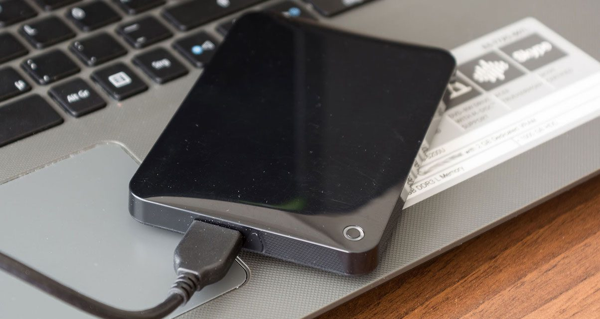

5 Reasons To Save Using An External Hard Drive
External hard drives are available in a variety of shapes, sizes and capacities. Portable hard drives are small and easy to travel with and most don’t require external power
1. It’s Offline
In order to save on the Cloud and utilize the Cloud services you need to be online. So, without an internet connection saving your data is practically impossible this way. However, this is not the case for external hard drives. Using the Cloud services means that you are always counting on the fact that your connection will be up, every time and everywhere you need to save or access information.
2. Ample Storage
External hard drives are now measured in terabytes (TB) which is in excess of 1,000 gigabytes, and not just a couple gigabytes of free storage per account. There are portable drives that provide up to 5 terabytes of data and cost less than $80.00. For those that really require loads of storage for movies, photos and music, then the free cloud storage solution is not ideal for you.
3. Safety
Cloud storage may protect your data from flood and fire, those physical elements that can reek havoc on your data files. However, it doesn’t mean that your data is free from all terror. It is quite possible for a persistent person to gain entry into your cloud and access all your information by simply guessing your password, even more hackers can access your information as well. Also what about the country that your data is being hosted in? Are you sure that it is safe?
4. Easy Data Backup
As with the cloud service and their auto backup feature, most hard drives available on the market also offer such a feature. They wireless back up and even organize all the images and videos that are stored on your internal hard drive on your laptop, tablet or smartphone, they also include images and videos on your social media accounts and even your cloud service. Hard drive transfers are much faster that uploading files to the cloud as well.
5. Money Well Spent
Some brand name 1 TB external hard drives are available for less than $50.00, which is less than a cloud service if calculated over a period of time, also if your stop a payment for your cloud service, you forfeit access to your files until you resume payment. The external hard drive is a one time purchase, however it is recommended that you own a few hard drives and have them located in various locations, just in case something happens to one of them.